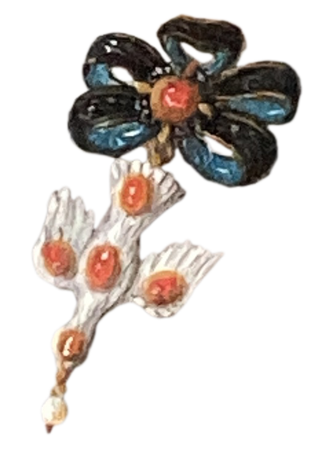
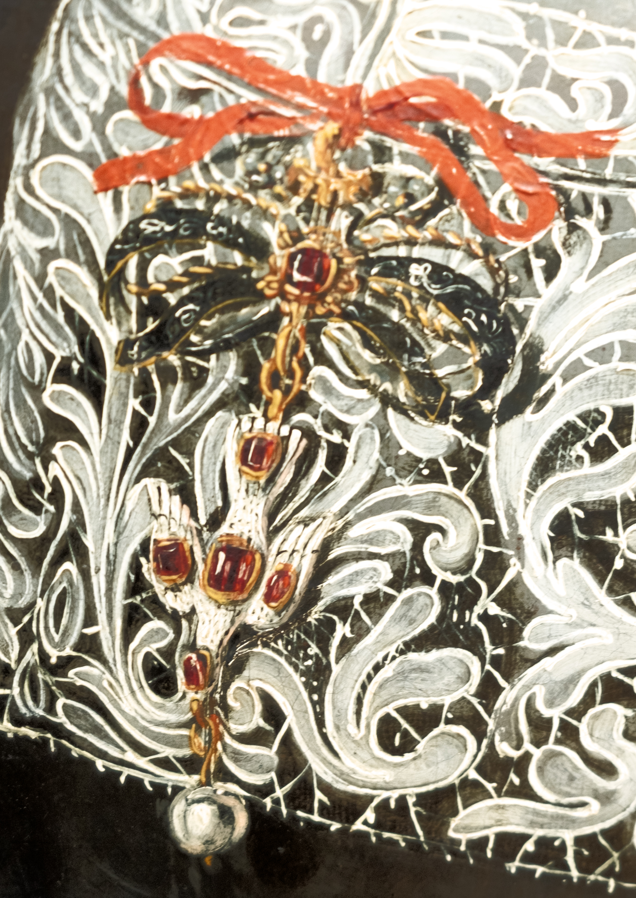
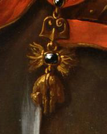
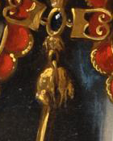
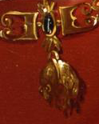
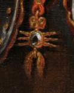
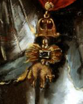
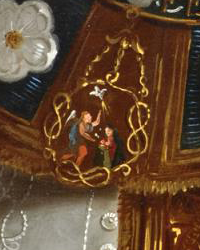
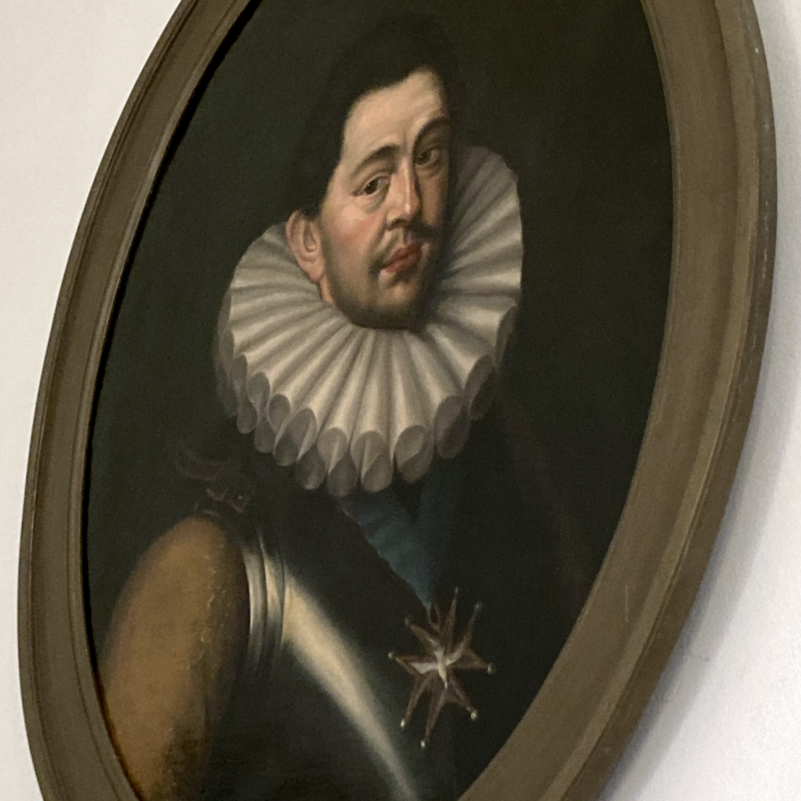
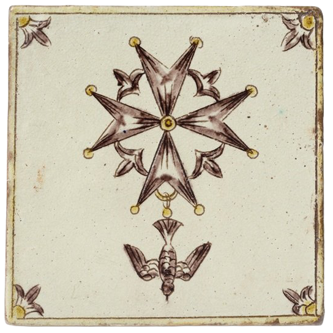

Porträt von Magdalena Weiss, 1682, 31.5 × 22.1 cm, Kunstammlung des Bundes vW134, Porträtdok. 2067, Foto: Matthias Bill, Belp, Public Domain
Porträt von Maria Magdalena von Diesbach, 1683, Öl auf Leinwand, 114.2 × 83 cm, Kunstsammlung des Bundes vW15, Foto: Matthias Bill, Belp, Public Domain



...und mehr bisher nicht gefundene Exemplare.











© Hugenottenmuseum Berlin & Lorenz Kienzle / Ronka Oberhammer, CC BY-NC-SA
Zwei Gemälde im Grossen Salon des Beatrice von Wattenwyl-Haus. Zwei Damen der Berner Oberschicht um 1680, portraitiert mit Brämikappe, entsprechend der damals geltenden
Kleidermandate.1
Ihre Kleidung zeigt, dass die Mode sich trotzdem entwickelte, aber ein Accessoire ist auf beiden Bildern zu finden. Der Anhänger an einer floralen
schleifenförmigen Brosche, eine fallende Taube mit Perle am Schnabel, besetzt mit fünf roten Steinen.
Ist es zweimal dasselbe Objekt, vielleicht vererbt?
Die zwei Frauen sind familiär nur unwesentlich verbandelt, die Vollendung der beiden Portraits liegen nur ein Jahr auseinander.
Trauen wir uns doch aber aus
dem Haus und durchsuchen im Archiv der Burgerbibliothek die Porträtdok. – eine Zusammenstellung von Portraits aus Bern, die seit den 1960ern unterhalten und gegebenenfalls
erweitert wird.2 Und tatsächlich, da sind weitere solcher Taubenanhänger auf Portraits zu finden!
Knapp ein Dutzend Frauenportraits von 1670 bis 1693
finden sich in der Datenbank. Wenn man nun weiter bei den Berner Kulturinstitutionen rumstochert, stösst man im Bernischen Historischen Museum und im Kunstmuseum
auch auf je ein solches Portait, das im BHM ist auch in der Porträtdok. erfasst.
Online liess sich bisher nur ein weiteres Gemälde mit solch einer Taube
finden, das Portrait von Barbe de Theisson von 1663, via die Kunsthandel-Plattform MutualArt. Alles in allem sind wir also mit einem Korpus von 13 Bildern
konfrontiert, davon eines bis drei wohl Kopien von älteren Werken. Was machen wir daraus?
Der Steinbesatz auf der Taube, ursprünglich auf den zwei
Gemälden im Von Wattenwyl-Haus identisch, ist mit den weiteren Beispielen etwas diverser geworden. Manchmal sind es nicht fünf, sondern nur vier rote Steine
– der Kopf bleibt unbesetzt. Beim Portrait von Elisabeth von Werdt-Andreae im Kunstmuseum sind es sogar nur zwei rote Steine auf den Flügeln, dafür ein grüner
auf dem Rumpf.
Die Tauben muten wie ein Ordenszeichen an. Davon gibt es auf Portraits nicht zu knapp, gewohnterweise sind aber Männer mit Orden Frauen gegenüber stark übervertreten.
Alleine im Von Wattenwyl-Haus finden wir mindestens drei verschiedene Ordenstypen mit Tieren: Der berühmteste ist der Orden des Goldenen Vlieses mit dem
Schaf an einer Kette aus Feuerstahl, gestiftet 1430 vom Burgunderherzog Philipp der Gute.3
Der zweite ist der Annunziaten-Orden, Hausorden der Savoyer.4 Und
oha! Hier finden wir eine fallende Taube über dem Erzengel Gabriel und Maria, der typischen Szene der Verkündigung. Der portraitierte Nicolas de Watteville (1544–1610)
hängt im Grossen Salon unseren zwei Damen mit Taube gegenüber.
Doch beim dritten wird unsere Taube sogar Hauptakteurin, es handelt sich nämlich
um den Orden vom Heiligen Geist. Fall gelöst. Oder?
Wenn wir nach dem Orden des Heiligen Geistes in Bern Ausschau halten, finden
wir gleich zwei verschiedene Verbindungen. Einerseits war der Mönchsorden der Hospitaliter vom Heiligen Geist seit dem 14. Jahrhundert für Teile des Spitalwesens
in Bern verantwortlich.5 Diese Pflicht ging mit der Reformation und der Aufhebung des Ordens auf die Burger über, die Patrizier-Oberschicht. Namentlich erinnert
an diese Verbindung entfernt noch heute die Heiliggeist-Kirche.
Der andere Orden ist ein Ritterorden, den Heinrich III. 1578 gründete, um den Heiligen Geist
für die Krönungen zum König von Polen (Pfingstmontag 1573) und Frankreich (Pfingstsonntag 1574) zu ehren.6 Von diesem Orden kommt übrigens das Blaue Band,
das Cordon Bleu!
Ein Portrait eines Trägers dieses Ordens finden wir ebenfalls im Von Wattenwyl-Haus. Wie, wenn überhaupt, hängen unsere Tauben auf den Frauenportraits
nun mit diesen verschiedenen Ordenstauben zusammen? Das ist die grosse Frage.
Eine These führt in Richtung Militärdienst, als Proxy-Orden für die Frauen der in Frankreich
dienenden Schweizer Offiziere. 1662 wurde der erste Damenorden durch die römisch-deutschen Kaiserin Eleonora Magdalena Gonzaga von Mantua-Nevers gegründet.7 Wagten
die Berner Damen eine Imitationstat?
Die andere These wurzelt im Spitalwesen. Die seltsam eingegrenzte Zeitspanne, während der die Tauben auf Portraits auftauchen
(Stand jetzt die 30 Jahre zwischen 1663 und 1693), findet nämlich eine ziemlich passende Korrelation in der Flüchtlingsbewegung des zweiten Refuge.
Es geht um die Hugenotten, die protestantische Glaubensminderheit in Frankreich, nach der Reformation verfolgt vom französischen Königshaus. Viele fanden
ihren Weg in die benachbarte Schweiz. Bern war die eidgenössische Stadt mit dem höchsten Kontingent an aufgenommenen Flüchtlingen.8
Die zweite grosse
Flüchtlingswelle, das oben genannte zweite Refuge, hängt zusammen mit der Aufhebung des Ediktes von Nantes 1685 durch Louis XIV. Auch im Vorfeld, ab 1629
und vermehrt ab der zweiten Hälfte des 17. Jahrhunderts nahm die religiöse Verfolgung und die damit verbundenen Flüchtlingsbewegungen wieder zu. 1663 bis 1693 ist
eine kritische Zeit für die Flüchtlings- und Asylpolitik in Bern.9
Ende des 17. Jahrhunderts kam es zum sogenannten Grand Départ der Hugenotten aus
der Schweiz, die verbliebenen Familien wurden grossflächig mit einem unbefristetem Bleiberecht, oder auch einer Einbürgerung bedacht.10
Unsere Tauben-Anhänger
können also mit all dem historischen Kontext durchaus in einen Zusammenhang mit diesen Umständen gebracht werden. Fallende Tauben haben nämlich bis heute
als protestantisches Zeichen überlebt, das sogenannte Hugenottenkreuz. Dieses wurde erst Ende des 19. Jahrhundert auch so benannt und wurde laut der
in der Forschungsliteratur gängigen Erzählung das erste Mal 1688 in Nîmes von einem Goldschmiedemeister hergestellt.11
Ob unsere Tauben, die ja gut 25 Jahre
älter wären, als die in Nîmes etwas mit diesem Schmuckstück zu tun haben ist die kunsthistorische Fragestellung, die mit diesem Projekt spezifisch zu
erschliessen versucht wird. Dafür werden historische Aufarbeitungen der Flüchtlingsbewegungen der Hugenotten und zeitgenössische Quellen – sowohl
Gemälde, als auch Schriftquellen, Rechnungen, andere Schriften – konsultiert.
Und je tiefer in die sozialen Konstellationen des Berns
jener Zeit man sich gräbt, desto komplexer wird das Gefüge aus politischen, religiösen und gesellschaftlichen Spannungen. Kleidermandate, Hugenotten, Täufer,
Pietistinnen, soziale, religiöse Reform- und Bewahrungswünsche, die auch symbolisch auf Portraits ausgetragen wurden.
Verzeichnis
Cabanel, Patrick. La croix huguenote – Petite histoire d'un mot et d'un bijou d'identité. Musée du Désert, 2025. 43f.Gilomen-Schenkel, Elsanne. «Hospitaliter vom Heiligen Geist». In Historisches Lexikon der Schweiz (HLS), Version von 2005, aktualisiert 2010.Küng, Markus. Die Bernische Asyl- und Flüchtlingspolitik am Ende des 17. Jahrhunderts. 2. Band Publikationen der Schweizerischen Gesellschaft für Hugenottengeschchichte. Droz, 1993.Prinz zur Lippe, August Ernst. Orden und Auszeichnungen in Geschichte und Gegenwart. Keysersche Verlagsbuchhandlung, Heidelberg / München, 1958.Simon-Muscheid, Katharina. «Kleidung – Kleidung für jeden Stand». In Historisches Lexikon der Schweiz (HLS), Version von 1998, aktualisiert 2008.Société des amis du musée de la Légion d'Honneur et des ordres de chevalerie. «Ordre du Saint-Esprit». Abgerufen am 27.05.2026.Tosato-Rigo, Danièle. «Protestantische Glaubensflüchtlinge – Das zweite Refuge». Übersetzt von Alice Holenstein-Beereuter. In Historisches Lexikon der Schweiz (HLS), Version von 2009, aktualisiert 2014.
vgl. Katharina Simon-Muscheid, «Kleidung – Kleidung für jeden Stand», in Historisches Lexikon der Schweiz (HLS), Version von 1998, aktualisiert 2008.
Hier geht es zur Porträtdokumentation.
August Ernst Prinz zur Lippe, Orden und Auszeichnungen in Geschichte und Gegenwart, Keysersche Verlagsbuchhandlung, Heidelberg / München, 1958, 137.
Elsanne Gilomen-Schenkel, «Hospitaliter vom Heiligen Geist», in Historisches Lexikon der Schweiz (HLS), Version von 2005, aktualisiert 2010.
Prinz zur Lippe, Orden und Auszeichnungen, 35.
Société des amis du musée de la Légion d'Honneur et des ordres de chevalerie, «Ordre du Saint-Esprit», abgerufen am 27.05.2026.
Prinz zur Lippe, Orden und Auszeichnungen, 20.
Danièle Tosato-Rigo, «Protestantische Glaubensflüchtlinge – Das zweite Refuge», übersetzt von Alice Holenstein-Beereuter, in Historisches Lexikon der Schweiz (HLS), Version von 2009, aktualisiert 2014.
vgl. Markus Küng, Die Bernische Asyl- und Flüchtlingspolitik am Ende des 17. Jahrhunderts, 2. Band Publikationen der Schweizerischen Gesellschaft für Hugenottengeschchichte, Droz, 1993.
Tosato-Rigo, «Das zweite Refuge».
Patrick Cabanel, La croix huguenote – Petite histoire d'un mot et d'un bijou d'identité, Musée du Désert, 2025, 43f.